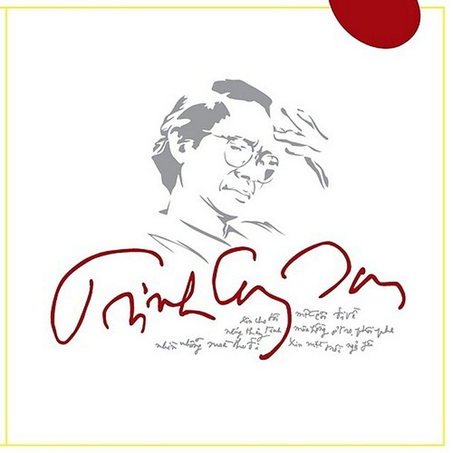

Sinh ngày: 28-2-1939 tại Lạc Giao. Chính quán: Minh Hương. Soạn nhạc từ năm 1958-1959

.Tác phẩm: 1. Trên ba mươi bản (Ướt mi, Biển nhớ, Lời buồn thánh, Hạ trắng, Tuổi đá buồn, Nắng thuỷ tinh, Chiều một mình qua phố, Xin mặt trời ngủ yên…) do các nhà xuất bản An Phú, Ly Tao, Minh Phát phát hành từ 1959 đến 1965; 2. Tập Thần thoại quê hương, tình yêu và thân phận do nhà xuất bản An Tiêm và Nhân Bản phát hành 1965-1966; 3. Ca khúc da vàng, Kinh Việt Nam, Ta phải thấy mặt trời, Những tình khúc Trịnh Công Sơn, Như cánh vạc bay, Cỏ xót xa đưa,… do nhà xuất bản Nhân Bản in ấn lần lượt từ 1966 đến 1970-71.
Trịnh Công Sơn và tiếng ru máu lệ
Tôi là một nghệ sĩ thuần tuý. Tôi chỉ diễn tả những điều gì tôi mơ ước, nhưng tôi không biết làm cách nào để hoàn thành những mơ ước của tôi!…
(Trịnh Công Sơn, trích The New York Times, 10-6-1970)
Trong lịch sử âm nhạc Việt Nam, không nhạc sĩ nào có thể tạo cho mình, cho thế hệ mình, những cơn lốc nghệ thuật làm lay động đến chiều sâu tâm thức con người ở trong và ngoài kích thước quốc gia như Trịnh Công Sơn. Trong vòng 4, 5 năm trở lại dây, tiếng nhạc Trịnh Công Sơn qua giọng hát Khánh Ly đã đi hẳn vào đời sống tâm linh của những trẻ tuổi bằng niềm đau xót và phẫn nộ xen kẽ trong một hoàn cảnhh không mấy thuận lợi vì tình hình quân sự và chính trị.
Tiếng nhạc Trịnh Công Sơn đã gieo rắc nỗi ai oán giận hờn bàng bạc trong vòm cong âm thanh để trở thành niềm ám ảnh khôn nguôi ở mỗi lương tri hiện hữu. Cái vòm cong đó như một khung trời trong suốt, ở đấy, mọi cảm xúc được thể hiện rõ ràng qua từng nét nhạc chập chờn, khắc khoải, với vóc dáng xanh xao, với đêm dài không ngủ, với nguồi vui chợt tắt trên môi, với dòng lệ hoà theo tiếng gào thét âm vọng tự cuối trời máu lửa. Trịnh Công Sơn đã rót vào cuộc sống những giọt cường toan hay mật ngọt? Thân phận con người Việt Nam với 25 năm chinh chiến đè nặng trên quê hương này có phải chăng, để chứng minh cho tinh thần bất khuất của một dân tộc đã trải qua nhiều cay đắng và tủi nhục? Nhưng cuộc chiến hôm nay, với những tan nát có đấy, đâu phải cuộc chiến thuần tuý quân sự giữa hai quốc gia, nó đương nhiên là cuộc đấu tranh để chọn lựa chế độ trong một quốc gia với sự cổ võ, trợ lực ở cả hai phe cộng sản và tư bản.
Sự xác nhận một vị trí, một tư thế giữa hoàn cảnh này, phải chăng là nhận thức đứng đắn của con người chân chính? Dưới bóng mặt trời hằng ngày soi tỏ từng khuôn mặt anh em, bạn bè đang bị hút cuốn vào guồng máy nhập cuộc, Trịnh Công Sơn thoát ra, không phải để yên thân, hay đóng vai nhân chứng cho lịch sử mà đích thực, Sơn tìm riêng cho mình lối sống cá biệt với những gì mà xã hội đã quen thuộc. Do đó, chiều hướng sáng tạo âm thanh của Trịnh Công Sơn trong hơn 100 ca khúc, tuy không cùng chảy chung nguồn cảm hứng, nhưng tất cả đã khởi hành từ một ý thức, ý thức thê thảm của thân phận làm người trong một môi trường khốn khó: chiến tranh. Chiến tranh, chẳng những gây đổ vỡ, tang tóc cho quê hương, cũng vì nó, bao nhiêu ước mơ phải tàn lụi và tương lai mịt mù vóc dáng. Ai cũng biết vậy, ai cũng nghĩ vậy, chẳng cứ gì Trịnh Công Sơn, nhưng cuộc chiến này, mang một hình thái đặc biệt, ở đấy, con người được quyền chọn lựa chế độ và thái độ trước cuộc sống, do đó, mới cần đến sự góp sức của cá nhân vào tập thể để bảo vệ cuộc sống mình thừa nhận. Sự khước từ nhập cuộc của Trịnh Công Sơn trong âm nhạc, thực ra, cũng chẳng mang lại ảnh hưởng nào tai hại cho cuộc chiến đang diễn ra từng giờ, từng phút trên mảnh đất khốn cùng từ bao năm. Bằng chứng hiển nhiên, không chiến sĩ nào vì các ca khúc Trịnh Công Sơn mà buông súng, từ bỏ vai trò lịch sử của mình. Phải thành thực nhận rằng, các chiến sĩ trẻ rất mến thích Trịnh Công Sơn, vì nhạc của Sơn đã nói lên hộ họ những băn khoăn, tiếc nuối, những đam mê cũng như chán chường của mỗi số phận trong cuộc đời, trước chiến tranh. Nhưng sự ưa thích ở đây, nằm trong vị trí thuần tuý nghệ thuật chẳng những không nguy hiểm mà còn giúp ích cho mỗi số phận tự an ủi, vỗ về bằng những âm thanh chất ngất, bằng ngôn ngữ giao hoà nức nở!… Có một số người cho rằng, nhạc Trịnh Công Sơn là sự phản bội xương máu của các chiến sĩ đã hy sinh ngoài mặt trận từ bao lâu, để giữ vững mảnh đất tự do này, trong đó có Trịnh Công Sơn, gia đình, cùng bè bạn đang góp mặt. Nhưng cũng có người nghĩ, Việt Nam hiện nay là quốc gia dân chủ, mọi công dân đều có quyền bày tỏ ý kiến của riêng mình trong phạm vi này đấy, vì nếu không, còn đâu dân chủ? Bởi vậy, sự hiện diện của Trịnh Công Sơn như một thách đố.
Thực ra, vị trí của các ca khúc Trịnh Công Sơn chỉ là cái nút an toàn của chiếc động cơ đang quay với tốc độ khủng khiếp, để tránh một nổ vỡ bất ngờ nào đó, có thể xảy ra ngoài dự định.
Trịnh Công Sơn vào đời với vóc dáng độc đáo, với những đắm đuối đến tận cùng của đam mê, hoà trộn cùng niềm đau thương rã cánh của một tâm hồn ngu ngơ, nhìn cuộc đời với lo sợ và chán chường. Chính vì những mâu thuẫn nội tâm phát triển một cách quá mạnh mẽ trong mỗi suy nghĩ, nên tiếng nhạc của Sơn lúc nào cũng choáng váng, ngây ngất trong từng vũng âm thanh run rẩy, nghẹn ngào để chạy trốn vào tiềm thức của người thưởng ngoạn. Rồi nó nằm chết trong đó với buồn thương lãng đãng. Nó đưa con người đi dần vào cơn mê hoặc. Nó làm cho tâm tư bị vò xé bởi niềm đau không thành tiếng. Nó ray rứt, đứt nuối trong mỗi ưu tư về thân phận vật vã trước định mệnh. Nó kéo dài từng cơn mệ loạn làm ngất ngư thân xác.
Ca khúc Trịnh Công Sơn, dù ở bản nào cũng vậy, không mang một ý tình cứu rỗi, một ân huệ thiêng liêng, nó có đấy như biểu tượng của oán hờn! Dòng nhạc Trịnh Công Sơn chia làm ba loại: ca khúc viết cho chiến tranh, ca khúc viết cho tình yêu và ca khúc viết về thân phận.
Trong loại thứ nhất, Trịnh Công Sơn bị ám ảnh bởi chiến tranh, ở đấy, tuổi trẻ không còn là một dự tính nữa. Nó hiện diện như loài rong biển, phó mặc cho chiều nước đẩy đưa đến bến bờ nào đó, hay ngàn đời phải chìm đắm giữa lòng đại dương mù mịt. Chiến tranh, dù là cuộc chiến chính nghĩa, thuộc bên này hay bên kia, Sơn không cần tìm hiểu. Sơn chỉ nghĩ đến sự chết chóc và những cảnh tượng thê thảm đang vì chiến tranh, tiếp diễn mỗi giờ phút trên mảnh đất nghèo này, nên Sơn chẳng ngần ngại gì mà tuyên bố với Jean-Claude Pomonti: Je ne veux pas faire de différence entre les guerres justes et les autres. (Câu này trích trong bài “Trịnh Công Sơn, ca nhân phản chiến tại miền Nam Việt Nam” – “Trịnh Công Sơn, chantre de l’antiguerre au Viêtnam du Sud, phụ trang báo Le Monde số 7570 ngày 17-5-1969). Cũng trong bài, Pomonti cho biết Trịnh Công Sơn đã làm nhạc vì một rủi ro trong lúc tập Nhu đạo (1959), phải nằm bệnh trong bốn năm liền. Trịnh Công Sơn sống ẩn dật ở Huế, và cũng từ đó tiếng dân ca lần đầu xâm nhập vào hồn. Sơn cũng chẳng cần giấu diếm rằng, mình chịu ảnh hưởng của dân ca cải cách ngoại quốc qua các ca khúc của Bob Dylan và Joan Baez. Trịnh Công Sơn bắt đầu sáng tác các ru khúc và ca khúc tình cảm với biểu thức mới, rồi lần lần tìm kiếm.
Sự tìm kiếm đưa Trịnh Công Sơn đi dần vào nỗi đau của con người trong cuộc chiến hiện hữu, mà vì lý do thầm kín nào đó, Trịnh Công Sơn đã chối bỏ không gian mình góp mặt, để thay vì làm cho nó, tại nó, lại đứng riêng biệt mà khóc than, oán hờn gây nên ngộ nhận. Chiến tranh không do sự phản đối của một người, một số người, hay nghệ thuật mà có thể chấm dứt một cách ổn thoả, bình thường. Nhưng mọi người phải thẳng thắn nhìn vào nó như nhìn vào một sự thật hiển hiên, rõ ràng như đời sống có đấy, còn đấy, nghĩa là phải chấp nhận, dù cho sự chấp nhận đi qua một hình thức nào đó, thuận tiện hay bất lợi đối với mỗi cá nhân đi nữa.
Trịnh Công Sơn đã chấp nhận cuộc chiến này có thật, nhưng chấp nhận bằng những âm thanh run rẩy, bằng môi cười gượgn gạo, bằng mắt nhìn e ngại, bằng tiếng khóc nghẹn ngào vương vất vây quanh,
Một ngày, ngày đã qua, ôi một ngày chóng qua, một chiều, một ngày âm thành đã… đã trôi đi không còn gì. Ôi chinh chiến đã mang đi bạn bè, ngựa hồng đã mỏi vó chết trên đồi quê hương, còn có ai không, còn người, ôi nhân loại, mặt trời và em thôi!… (“Xin mặt trời ngủ yên”)
Mỗi ngày qua đi là mất, dù nó qua trong sôi nổi hay âm thầm ở tâm sự mỗi người. Cái tuổi trẻ, chúng ta đang ôm trong vòng tay quấn quít, đang nhìn đời bằng đôi mắt hồn nhiên, đang phác hoạ trong tâm trí muôn vàn mơ ước và những cánh bướm vàng đang đuổi nhau bay lượn giữa vườn đời mới lớn. Nhưng một ngày đã trôi đi, chinh chiến đã lấy mất của mình bao nhiêu bạn bè? Có buồn không? Có tiếc nhớ không? Một tương lai mịt mờ với khuôn mặt chiến tranh làm tàn úa mộng mơ, làm con-ngựa-hồng-biểu-tượng-của-tuổi-trẻ đã mỏi vó chết trên đồi quê hương, hay chết giữa hồn mình? Mặt trời, xin mặt trời hãy ngủ yên, ngủ vĩnh viễn trong không gian này, để đừng bao giờ tôi phải nhìn thấy nỗi đau đớn đang trải rộng trên quê hương. Và nhân loại, và em, có còn gì không? Có còn gì không? Trong nỗi xót xa sau mùa chinh chiến, có chăng, mảnh đất mến yêu này trở lại thuở hồng hoang, với hình ảnh Liêu trai chập chùng hằng đêm mở hội!…
Niềm than van của ca khúc như lời tuyệt vọng và tiếng hát, ôi! Tiếng hát đã dìu người nghe vào đến tận cùng ngây ngất. Trong đó, thực và giả như xáo trộn rồi để lại những dư âm nghẹn ngào, lãng đãng. Những ngày qua đi, những ngày còn lại với vết thương in đậm trong hồn người. Hằng ngày, hằng đêm từng cảnh tượng đi qua, đi qua trên khuôn mặt người già, trong tâm trí rối loại người điên, trong xác chết, trong tiếng bom, tiếng súng vây quanh, với 25 năm hoả châu thay mặt trời thắp sáng nhân gian. Mẹ Việt Nam, quê hương ruộng vườn ta đó, nay còn gì? Chỉ còn màu đất loang đỏ, chỉ còn đàn bò không luống cỏ và ngày dài của quê hương chỉ còn lại đau buồn trong màu da vàng bệnh hoạn. Ca khúc “Ngày dài trên quê hương”, nếu xét trên phương diện đấu tranh, đúng là ca khúc phản chiến. Nó đã thê thảm hoá cuộc chiến mà miền Nam chỉ đóng vai trò thuần tuý tự vệ. Thành phố kia, đồng ruộng này nếu có xơ xác và điêu tàn như vậy không phải do chúng ta khơi nguồn máu lệ! Sự có mặt hàng hàng lớp lớp thanh niên hiện diện dưới bóng cờ chẳng phải vì ham thích sự chém giết nhưng đích thức, có mặt để gìn giữ những gì mà họ có nhiệm vụ phải gìn giữ, dù vì bổn phận chứ không do ý thức. Nhưng đứng trên bình diện nghệ thuật để phê phán và xác định, thì ca khúc “Ngày dài trên quê hương”, chỉ là sự tỏ bày nỗi ai oán của cá nhân trước súng đạn với lo âu, căm thù và đau đớn thay, cuối cùng lại nhận thức ra mình xa lạ ngay cả với quê hương, đồng bào ruột thịt.
Nhưng dù ở trạng thái nào, Trịnh Công Sơn vẫn vì hai chữ Việt Nam để phải nói lên những điều cay đắng. Tiếng ru của người mẹ đã tự đáy linh hồn dân tộc cất lên như tiếng khóc rã rời, mệt mỏi vì cảm thấy sự không-thuộc-về-mình, những gì mình muốn, mình nghĩ.
Con ngủ đi, đứa con của mẹ da vàng. Ru con đạn nhuộm hồng vết thương… (“Ngủ đi con”)
Tiếc thay, tiếng ru chỉ là tiếng than thở. Đàn con khi lớn lên vẫn ra chiến trường, để mẹ ê chề, tủi cực. Tiếng ru đã hai lần cất lên, cả hai lần đều bất lực. Chúng đã khôn lớn, tự hành động, tự chọn lựa đường đi dù có làm buồn mẹ!
Hoàn cảnh Việt Nam trong quá khứ và hiện tại, vẫn là sự tiếp nối không ngừng của lịch sử, cũng vì lịch sử mà mẹ Việt Nam, hay một biểu tượng nào đó, được nhạc sĩ dùng để nói về đất nước này cũng chỉ là ý niệm, ý niệm một cách thê thảm rằng, cái chết hay cái sống của mỗi số phận nó ở ngoài quyết định của mỗi người. Đứa con gái da vàng yêu quê hương như yêu thân mình chợt ôm tim, chợt lìa cuộc sống mà đất nước vẫn u mê trong căm thù, oán hận!
Những ca khúc viết về cuộc chiến của Trịnh Công Sơn, đều mang bên trong nó, đời sống riêng. Cái đời sống thứ hai đó, không phải ai cũng thấy, ai cũng biết, khi nghe nhạc Trịnh Công Sơn, nó chính là lương tri trước cuộc chiến, ẩn nấp sau ngôn ngữ, qua giọng buồn đứt nối của âm thanh. Cái lương tri đó không được nói thẳng với mọi người, nó chỉ như chiếc bóng chập chờn thoáng hiện, thoáng mất, mà mỗi người sẽ tìm thấy ở lòng mình khi chợt bàng hoàng, thảng thốt, vì có anh em, chồng con vừa gục ngã đó đây…
Trịnh Công Sơn đã nói thật những gì ẩn nấp trong đầu, qua ngôn ngữ và âm nhạc, nhưng chính điều nói thật này, hàm chứa thiên vị và phiến diện, nên thay vì vô tư, nó trở thành bất lợi cho một phía mà ở đó, sự có mặt của mỗi người là để bảo vệ, nếu không, cũng đừng làm hại nó vì ngộ nhận hay ích kỷ. Chính vì không nhìn thấy và không đoán biết những gì thuộc phía bên kia, nên phần nào Trịnh Công Sơn chủ quan, khi phổ biến ý nghĩa của riêng mình trong vấn đề chung của quốc gia. Tiếng bom có rơi ở xóm làng nào đó, đại bác đêm đêm có vọng về thành phố nữa đi, thì thái độ của con người có ý thức không thể như người phu quét đường dừng chổi đứng nghe được. Cái thái độ dửng dưng chắc chắn không phải điều cần thiết đối với người miền Nam. Khi dùng hình ảnh này, Trịnh Công Sơn muốn nói lên sự bất lực của con người trước những thảm hoạ tuy không muốn, vẫn phải chứng kiến và mỗi số phận đều phải gánh chịu cái sự thực hiển nhiên đó mỗi ngày, mỗi đêm…
Nhưng chẳng phải chỉ bấy nhiêu, với những dữ kiện được trình bày trong các ca khúc viết về chiến tranh, đích thực nó còn mang nặng niềm đau đớn của từng số phận bị chiến tranh vùi lấp trong một cảnh ngộ nào đó. Các địa danh nổi tiếng về những trận giao tranh ác liệt như Pleime, Chiến khu Đ, Đồng Xoài, Chu Prong, Ashau, A Lưới v.v… được ghi nhận như những chứng tích tuyệt đỉnh của bi thương. Người yêu, người yêu hỡi! Tại sao lại có thể như vậy? Cái chết không thoải mái nằm cong queo ở một lòng đèo, hay cái chết nghẹn ngào không manh áo, hoặc cái chết lạnh lùng giữa rừng núi mịt mùng chẳng hẹn hò, có phải chăng để nuôi sống Việt Nam? Lẽ dĩ nhiên như vậy. Chiến tranh là một trò chơi tàn bạo, không ai muốn, nhưng khi đã chấp nhận nó với một ý nghĩa, thì mọi sự hy sinh phải được coi như thần thánh. Nếu không có những cái chết đèo, hoàn cảnh sinh hoạt miền Nam đã đổi thay và chắc chắn tiếng hát Khánh Ly sẽ thôi ngân dài ứ nghẹn đau trong kích thước phòng trà, hay một thính đường nào đấy, với tiếng vỗ tay của người mộ điệu đang có mặt bình yên, thoải mái để thưởng thức nhạc Trịnh Công Sơn. Tâm hồn nghệ sĩ, đúng ra chỉ là tấm phim lớn ghi nhận những hình ảnh do cuộc đời để lại. Những hình ảnh tốt cũng như xấu, chồng chất lên nhau, trong hồn người nghệ sĩ. Bởi vậy, nếu cơn đau nào có đến, ý nghĩ giận hờn, phẫn nộ nào có làm điên cuồng trí não, hay nguồn yêu thương êm dịu nào có xoa mát thịt da, cũng đều là phản ánh do cuộc đời đẩy tới. Kẻ nghệ sĩ không phải thần thánh, mà cũng chẳng có uy quyền cho lệnh hoặc cải tạo xã hội theo ý muốn của mình, bởi vậy, mỗi khi gặp ngang trái, gặp cảnh ngộ không vừa lòng, tự nhiên bật ra than thở để trút nhẹ oán hờn! Có lúc nào Trịnh Công Sơn vô tư nhất, thanh thoát nhất, dù nói về Việt Nam máu lửa, nhất là một Trịnh Công Sơn đi tìm quê hương, đi khâu vá tình thương đất nước, trong căn nhà nhỏ, đèn mờ sáng, ngủ quên non nước, để cho thịt xương phưoi trắng đôi miền. Ở ca khúc này, người nghệ sĩ đã nhận diện được cuộc chiến hiện tại không do một phía, nhưng vì tương lai, vì ruộng đồng, xin mở tan xích xiềng vô hình trói buộc tự do. Cái tự do trong ca khúc “Đi tìm quê hương” là cái tự do của một dân tộc, người nhìn người không e ngại và mọi ý thức hệ dẫn đường không nằm trong chủ nghĩa này, chủ nghĩa nọ làm con người ly tán.
Trịnh Công Sơn, đã chứng kiến cuộc tổng công kích của Việt cộng hồi Tết Mậu Thân vào kinh đô Huế. Sơn đã nhìn thấy tận mắt cảnh chém giết hung tàn do cộng quân gây ra. Đã nhìn thấy bao nhiêu đổ vỡ, bao nhiêu nát tan, đau xót. Đã sống những giờ phút hãi hùng giữa lòng chiến trận với những xác người chết không kịp trối trăn, không kịp nhắm mắt và còn nhiều nữa!… Cảnh tượng này đã gây xúc động thực sự trong hồn Sơn với ca khúc: “Hát trên những xác người”:
Chiều đi lên đồi cao
Hát trên những xác người
Tôi đã thấy
Tôi đã thấy
Trên con đường người bồng bế nhau chạy trốn
Tôi đã thấy
Bên khu vường một người mẹ ôm xác đứa con…
…
Tôi đã thấy
Người cha già ôm con lạnh giá
Chiều đi qua bãi dâu
Hát trên những xác người
Tôi đã thấy những hầm những hố
Đã chôn vùi thân xác anh em…
Thảm cảnh tàn sát ở Huế còn được Trịnh Công Sơn khóc vật vã trong: “Bài ca dành cho những xác người”:
Xác người nằm trôi sông
Phơi trên ruộng đồng
Trên nóc nhà thành phố…
…
Xác người nằm bơ vơ
Dưới mái hiên chùa
Trong giáo đường thành phố…
Những xác người đó, có già, có trẻ, có em bé thơ ngây nằm trong mưa lạnh, cái lạnh căm căm của mùa xuân xứ Huế với hoa đào chưa phai màu phấn bướm.
Đi từ phẫn nộ, tiếng nhạc Trịnh Công Sơn lả vào cầu khẩn với ước mong lời nói của mình được chấp nhận. Hoà bình, ai mà chẳng muốn. Hai tiếng đó như lời kêu gọi thầm kín trong tâm tư mỗi con người thương nước. Nhưng 25 năm đã trôi qua rồi đấy và cảnh xương trắng chất thành non, đâu phải lỗi ở người miền Nam, lỗi ở một chế độ khát máu, mà thực ra, do sự giằng co giữa hai thế lực vĩ đại quốc tế. Trịnh Công Sơn biết chắc điều đó, nên cất lên lời cay đắng:
… Kinh Việt Nam là những tiếng kêu thương thống thiết.
Khởi từ một thực trạng máu xương
Kinh Việt Nam cũng là lòng mơ ước về một rạng đông cho đêm tối dài lâu này. Những bài ca được viết từ những hân hoan lắng nghe được trong lòng người. Đó là nỗi hân hoan của đám đông chờ mong ngày hồi sinh… (“Kinh Việt Nam”)
Nội dung các ca khúc trong hai tập nhạc Kinh Việt Nam và Ta phải thấy mặt trời đều tỏ bày sự mong mỏi thanh bình qua những nét nhạc trầm hùng, nhưng vẫn không xoá hết được ray rứt, đắng cay.
Nơi đây tôi chờ
Nơi kia anh chờ
Trong căn nhà nhỏ
Mẹ cũng ngồi chờ
Anh ngồi chờ trên đồi hoang vu
Người tù ngồi chờ bóng tối mịt mù
Chờ đã bao năm
Chờ đã bao năm
Chờ đã bao năm?…
(“Chờ nhìn quê hương sáng chói”)
Chờ đợi là điều nhục nhằn với trăm vạn lo buồn. Niềm tin tưởng cũng như hy vọng đến gần hay xa đi, đâu phải tự mình quyết định mà do vận nước. Cứ nghĩ như vậy may ra tránh được thất vọng trong công trình nuôi dưỡng hy vọng.
Chẳng cứ gì ở những ca khúc viết về chiến tranh và quê hương. Trịnh Công Sơn mới có những dằn vặt, xót xa đâu. Nhạc tình của Sơn là sự giao thoa của âm thanh và ngôn ngữ thi ca cũng nói lên đầy đủ ý nghĩa trên. Tiếng nói của tình yêu và tuổi trẻ đối với Trịnh Công Sơn, hình như muôn thuở vẫn chỉ là lời dặn dò của ly cách. Những câu ân tình biến thành giọng than van thê thiết, với từng âm giai lả lả trôi về nẻo quạnh hiu nào đó. Sự cuồng nhiệt, đam mê bỏng cháy ở đầu môi không thuộc về nét nhạc của Trịnh Công Sơn.
Có lẽ định mệnh đã đưa đường tài năng, nên dù ở chiều suy tư nào, Sơn cũng cố tìm về cho mình những góc cạnh đau thương với những hoài nghi, chán chường. Ngôn ngữ đi qua nhạc như nhức mỏi, buốt giá, làm tê cóng tâm hồn,
… Trời còn làm mưa, mươi rơi, mưa rơi!… Từng phiến băng dài trên hai tay em xuôi, tuổi buồn em mang đi trong hư vô ngày qua hững hờ!…
Trời còn làm mưa, mưa rơi, mưa rơi
Từng phiến mây hồng em mang trên vai tuổi buồn như lá, gió mãi cuốn đi quay tận cuối trời!…
Âm thanh lướt đi nghe tha thiết, nghẹn ngào rồi kéo dài trong không gian như cơn gió đêm thu thổi lùa giữa rừng sâu. Nhạc tình của Trịnh Công Sơn, hay, hay lắm. Nó đắm đuối trong khung cảnh hoang sơ mà con người có mặt như những chứng tích lạc loài. Từng chùm hoa dã thảo thả xuống tự trời cao bay bạt ngàn trong không gian bát ngát. Tiếng hát, ôi tiếng hát đã cất lên thăm thẳm mịt mùng như bủa vây nỗi buồn không vượt thoát. Tiếng hát dìu âm thanh đi đến cuối trời tiếc nuối, ở đó, đã chờ sẵn biệt ly. Thời gian mong manh, tuổi đời mong manh, hy vọng mong manh, tình yêu mong manh, tất cả những mong manh đó như muốn ta ra, muốn xoá nhoà vào hư vô, để cát bụi lại trở về cát bụi. Tâm hồn Trịnh Công Sơn hình như bị quấn chặt bởi lớp lớp bi thương, nên dù cho tình yêu có đến, hoa đời có ngát hương, chăn chiếu đời có nồng men ân ái thì với Sơn, nó vẫn là ảo tưởng, vẫn cho đau buồn hơn nguồn vui, vì nguồn vui không nằm trong khuôn khổ cuộc sống hôm nay:
Mưa vẫn mưa bay trên tầng tháp cổ
Dài tay em mấy thuở tóc xanh xao
Nghe lá thu rơi reo mòn gót nhỏ
Đường dài hun hút cho mắt thêm sâu
Mưa vẫn hay mưa trên hàng lá nhỏ
Buổi chiều ngồi ngóng những chuyến mưa qua
Trên bước chân em âm thầm lá đổ
Chợt hồn xanh buốt chi mình xót xa…
(“Diễm xưa”)
Ca khúc “Diễm xưa”, một ca khúc rất nổi tiếng chẳng những trong nước, mà còn ở quốc tế. Đại hội Dân ca Quốc tế lần đầu tại Nhật Bản vào tháng 11-1970, tiếng hát Khánh Ly đã làm cho hàng vạn con người say mê âm nhạc lắng nghe, ngưỡng mộ. Khánh Ly cũng đã trình bày ca khúc này bằng tiếng Nhật tại Expo 70 – Osaka, được hoan nghênh nhiệt liệt. Có lẽ, trời bắt giọng ca Thái Thanh thuộc về Phạm Duy, thì tiếng hát Khánh Ly phải dành cho Trịnh Công Sơn. Sự thành công của Trịnh Công Sơn hôm nay, một phần nhờ vào tài trình diễn của Khánh Ly vậy.
Tiếng hát Khánh Ly có âm hưởng đặc biệt. Nó không cao vút, hoặc thanh thoát ở giọng hát bình thường. Nó ẩm đục, vướng nghẹn như niềm vui chợt mất. Nó bâng khuâng như cơn mưa vội đến. Nó tuyệt vọng như cánh chim non bay lạc trong cơn giông tố mịt mù. Nó đam mê giữa hơi thở chán chường. Nó khóc ngất rồi lịm chết trong nguồn đau vô hạn! Tiếng hát hình như có pha rượu và khói thuốc của từng khuya quên ngủ. Nó rót vào hồn người những thanh âm não nùng ngất ngất!…
Tình yêu, tình yêu nào đó, phải chăng để đánh lừa mỗi số phận hay để ghi dấu trong hồn từng hình ảnh qua đi, với nỗi ưu phiền giữa vùng u tối!
… Tình yêu xứ này
một lần hiện tượng
một lần bão nổi
giã từ giã từ
chiều mưa giông tới
em ơi em ơi
sầu thôi xuống đầy
làm sao em nhớ
mưa ngoài sông bay
lời ca anh nhỏ
nỗi lòng anh đây
sầu thôi xuống đầy…
(“Cuối cùng cho một tình yêu”, thơ Trịnh Cung)
Đối với Trịnh Công Sơn chẳng những cuộc đời là không trọn vẹn, ngay cả tình yêu cũng chỉ là sầu nhớ, mộng mơ! Vì thế, nét nhạc tình của Sơn luôn luôn bải hoải cung bậc, nhưng cái bải hoải ở đây không chứa đựng thất bại mà nó chứng minh cái nhìn của Sơn về tình yêu không nằm trong ước lệ bình thường. Nó là vóc dáng tuyệt đối của cái Đẹp xuyên qua ý nghĩ. Nó là tuổi trẻ đi tìm bóng mình qua kẻ khác. Từng dòng lệ trôi đi, từng cánh lá trôi đi, từng ngày tháng trôi đi và tuổi trẻ này với cơn đau ấy cũng trôi đi, tôi đi mãi mãi:
Tuổi nào nhìn lá úa vàng chiều nay
Tuổi nào ngồi hát mây bay ngang trời
Tay măng trôi trên vùng tóc dài
Bao nhiêu cơn mưa vừa tuổi này
Tuổi nào ngơ ngác tìm tiếng gió heo may
Tuổi nào vừa thoáng buồn áo gầy vai
Tuổi nào ghi dấu chân chim qua trời
Xin cho em tay còn muốt dài
Xin cho cô đơn vào tuổi này
Tuổi nào lang thang thành phố tóc mây cài…
(“Còn tuổi nào cho em”)
Nhưng cái tuổi thơ ngây đó đã hết rồi. Mây đã vây quanh giọt sầu và bàn tay che giấu lệ nhoà vì khóc ngàn thu, tháng năm van nài cho nguôi mong chờ cũng không một lần trả lại. Nhạc tình Trịnh Công Sơn đều đi chung khuôn thức. Ở đấy buồn, thương pha trộn, cuối cùng là bâng khuâng, tưởng tiếc trong âm thanh ngất ngây. Tiếng ru của người mẹ, hay tiếng ru dành cho cuộc tình với ngôn ngữ mặn nồng qua dòng tóc, phiến môi mềm, trên bàn tay gầy, trên mùa lá xanh rồi tiếng mưa sẽ ru em ngủ với mộgn mơ còn đó, nhưng dáng em vẫn trôi dài và tiếng ru này ngàn năm vẫn không phai giận hờn định mệnh!
Có lẽ Trịnh Công Sơn bị ám ảnh quá nhiều về cuộc chiến, nên ngay trong tình yêu, vẫn thấy thấp thoáng nỗi lo sợ nào ẩn nấp giữa chiều sâu tiềm thức, và tình yêu chẳng phải những lời hò hẹn ngay tình, nó được hình dung qua nỗi buồn và nước mắt.
Trịnh Công Sơn không tin vào cuộc đời có mặt và sự đoán biết nào đó, chỉ là những bóng mây bay lang thang trên trời cao chờ điều kiện vật lý vừa đủ, biết chất thành mưa. Bởi vậy, cái tuổi trẻ mỗi thanh niên mang trên vai hôm nay, nó cũng như những đám mây kia, chờ giờ phút nào đó sẽ hoà tan vào cơn mưa máu lửa,
Tôi ru em ngủ một sớm mùa xuân
em hôn một nụ hồng
Hỏi thăm về giọt nắng
Tôi ru em ngủ hạ cũng vừa xong
em hôn lên tay mình
Để chua xót tình trần…
(“Tôi ru em ngủ”)
Mình hôn lên tay mình, một hình ảnh vừa đẹp vừa mỉa mai, có nghĩa là cô đơn vẫn còn đó, tình yêu chỉ là đắng cay. Bởi vậy, dù cuộc tình có lên cao vút cũng mỏi cánh xa lìa bầy, rời bỏ đường bay. Cơn buồn phiền của tình yêu trong nhạc Trịnh Công Sơn nó kéo dài theo năm tháng. Nó là trái chin trên cây rụng rời, nó như dòng sông nước cuốn, nó như chiếc lá lìa cành và mong manh như nắng, như hồn mình vá khâu…
Tình yêu như vết cháy trên da thịt người
Tình xa như trời, tình gần như khói mây
Tình trầm như bóng cây, tình reo vui như nắng
Tình buồn làm cơn say
…
Tình yêu như cơn bão đi qua địa cầu
Tình thắp cơn sầu, tình dìu qua hố sâu
Tình vời lên núi cao, rồi trong cơn yêu dấu
Tình đầy tình xa nhau…
(“Tình sầu”)
Như đã nói, nguồn cảm hứng của Trịnh Công Sơn không chỉ ở trong môi trường phẫn nộ, hoặc bàng bạc trong tình yêu với tuổi trẻ hư không, nó còn quay nhìn thân phận. Những ca khúc viết về thân phận cũng chỉ là đi tìm cái hữu hạn của kiếp sống. Sự hiện diện của mỗi số phận bắt buộc phải đi qua một khoảng thời gian nào đó, do định mệnh an bài và cái không gian vô tình phải nhận diện. Theo Phật lý, đó là nhân quả, là luân hồi, là sự sinh trưởng không ngơi nghỉ và biến hoá vô cùng để phát triển, tạo nên cái “nghiệp” cho số phận. Con người đã ai thoát khỏi vòng: sinh, bệnh, lão, tử và ba chữ: tham, sân, si dễ gì tránh được? Nên cái thân phận khốn khó mà mỗi kiếp người phải mang nặng, không nằm trong phạm trù riêng, nó trải rộng ra cả thế gian này với những sai biệt xuyên qua cung số.
Cát bụi lại trở về cát bụi, câu nói nhuốm đầy bi quan nhưng rất thực tế. Vì:
… Ta ở, ta đi đời vẫn vô tình
Như ta chửa bao giờ có mặt!…
(Thơ Hoàng Trinh)
Chính vì sự vô tình của cuộc sống cũng như thiên nhiên, đối với mỗi cá nhân nên mới có người chán đời quyết giã từ cõi sống. Trịnh Công Sơn chưa đi vào con đường tuyệt vọng đó, nhưng những ca khúc viết về thân phận ít nhiều gì cũng mang nặng trong nó, nỗi thống khổ của riêng mình trước bao canh trần gian.
Hạt bụi nào hoá kiếp thân tôi
Để một mai vươn hình hài lớn dậy
Ôi cát bụi tuyệt vời
Mặt trời soi một kiếp rong chơi
Hạt bụi nào hoá kiếp trong tôi
Để một mai tôi về làm cát bụi
Ôi cát bụi mệt nhoài
Tiếng động nào gõ nhịp không nguôi…
(“Cát bụi”)
Rồi những năm, những tháng, kiếp người phải kéo lê trong vòng cương toả của xã hội với bao cố gắng, bao đam mê, bao thất vọng. Nhìn cuộc đời có đấy với lá úa, với mái tóc như vôi, với mặt trời soi sáng con ttim, hun nóng từ ngày này qua ngày khác để biến tình yêu thành đá cuội, và cái vũng hư không lúc nào cũng mở ra chào đón con người trở về cát bụi. Nhưng con người, sự thực, vẫn không chấp nhận dễ dàng quan điểm đó. Nó vượt lên bằng ánh sáng tâm linh, nó phản đối lại cái hữu hạn bằng cách tìm miên viễn qua ý thức, nó trộn lẫn hai miền sống chết để thấy rõ ý nghĩa Vô thường. Do đó, nó tồn tại trong dòng sống như một vòng quay không đứt đoạn, nối tiếp và nối tiếp…
Tiếng khóc than vây quanh đây đó. Từng ngày rồi từng ngày trôi đi. Quạnh hiu quá chăn chiếu trần gian, dù trần gian có mắt ai đẹp, có môi ai xinh, cũng chỉ là quạnh hiu! Đang ở giữa tuổi thanh xuân, Trịnh Công Sơn đã nhìn thấy trăm năm, với vóc dáng nghĩa trang trước mặt, mỗi khi nghĩ về kiếp sống. Lời trăn trối đó gửi đi từ đáy thẳm tâm linh cũng chỉ là tiếc thương im vắng!
Con người ở đâu, từ đâu tới và trở về đâu, câu hỏi đó hình như chưa ai trả lời minh triết được, nên băn khoăn vẫn còn nguyên vẹn. Cuộc hành trình đi tìm Vô cùng vẫn giữ kín trong vóc dáng hai chàng Lưu Nguyễn thuở nào. Từ hoang xưa tới hiện tại, vẫn nhịp đời đó thôi, và con người, được Sơn hình dung như một vật vô tri lăn mình giữa cuộc thế, với phiến đá ưu phiền có in dấu chân muông thú.
… Người đi phiêu du từ đó chưa thấy quê nhà, rộng đôi cánh ta chờ mong
Người đi chợ nhớ mình như đá
Đá lăn, vết lăn buồn…
… Từ cơn đau ấy lưu thân mỏi mòn
Ôi mắt than van xin lời thánh đêm…
(“Vết lăn trầm”)
Nghĩ về thân phận tức là truy nguyên nguồn gốc sự sống, muốn tìm về an ủi trong nỗi bơ vơ, sợ hãi. Người đi lên đồi cao, bước xuống lũng thấp, đi hỏi mưa, hỏi gió, hỏi rừng, hỏi mây, hỏi suối, hỏi sông, hỏi thăm về đời mình hoang vu, hỏi dòng nước lũ rời nguồn gặp đại dương, đại dương nói thầm về kiếp người với ăn năn và rêu phong, nên người thắp nến trong đêm thay mặt trời để soi tỏ Hư vô. Người đi trong cay đắng, người cúi xuống cho máu ngược dòng để làm nước tưới cho cây khô cành lá, cho bóng mình làm xót xa mặt trời, nghe tim rạn vỡ, nghe lòng bâng khuâng.
… Cúi xuống thật buồn cho nước sông cuồn cuộn
Hai mươi năm no tròn tuổi biết đau thương
Cúi xuống cho tắt nụ cười cho chút da thịt người
Tuy tan hoang vẫn còn bóng mát che ngang…
(“Cúi xuống thật gần”)
Có buổi nào đó, khi thức giấc chẳng nhìn thấy mặt trời, những hình bóng người vây quanh hôm trước nay bỗng nhiên vắng mặt. Ngay cả cuộc tình cũng mất tiếng cười. Con người cảm thấy mình lạc loài, bơ vơ. Bàn tay mẹ hiền cũng không còn nữa va chiếc nôi trống rỗn không ấm lời ru:
… Hôm nay thức dậy ôi ngẩn ngơ tôi
Hôm nay thức dậy mê mỏi thân tôi…
(“Xa dấu mặt trời”)
Trịnh Công Sơn đang sống, đang đuổi bắt mộng đời qua những vòng hoa ân thưởng. Cuộc sống ồn ào quấn chặt mỗi con mồi vào đấu trường rực lửa. Từng con mắt đỏ đọc, từng cặp môi mím lại, từng hàm răng nghiến chặt, từng thân người như những thân cây dựng lên thành luỹ. Và những tiếng kêu, những cơn gào thét, những lời nguyền rủa, những câu khóc than, những chuỗi cười ô nhục, tất cả như mê mải, như hối thúc đi vào những ô không gian dành riêng cho chúng. Nhưng ngoài chúng, đích thực, còn có những phút im lặng, những ngượng ngùng e thẹn, những tủi nhục không nói nên lời, những khắc khoải buông trôi qua tiếng thở dài não nuột của nhiều khuôn mặt đang cúi xuống!… Vì:
Chúa đã bỏ loài người
Phật đã bỏ loài người
Này em, em cứ phụ người
Này em, xin cứ phụ tôi…
… Này em có nhớ cuộc đời
Này em có biết loài người
Này em có nhớ gì tôi…
(“Này em có nhớ”)
Niềm tin cuối cùng đã mất, từ đây Trịnh Công Sơn có thể làm một kẻ lãng du vô trách nhiệm đi rong chơi giữa cuộc sống. Cái vòng lẩn quẩn sáng, trưa, chiều, tối kia nó bắt buộc con người phải tuân hành luật thời gian. Biết rằng phi lý, vẫn cứ phải níu lấy phi lý mà hành động. Tiếng chân mình gõ lên nền sỏi đá hôm nay là in dấu chân mình hôm trước để ngày mai đây, bước lại nhịp đầu. Con người muốn tung mình lên, muốn vứt mình qua khỏi sự nhàm chán đó, nhưng cơm áo ngày ngày bắt mình cúi đầu chấp nhận:
Một ngày như mọi ngày, em trả lại đời tôi
Một ngày như mọi ngày, ta nhận lời tình cuối
Một ngày như mọi ngày, đời như mây như khói
Một ngày như mọi ngày, mang nặng hồn tả tơi…
…
Một ngày như mọi ngày, từng mạch đời trăn trối
Một ngày như mọi ngày, đi về một mình tôi…
… Một ngày như mọi ngày, từng chiều lên hấp hối
Một ngày như mọi ngày, bóng đổ một mình tôi…
(“Một ngày như mọi ngày”)
Tiếng nhạc Trịnh Công Sơn hôm trước, như lả vào khung trời bi thảm của cô đơn. Những ca khúc với cung bậc chan hoà máu lệ, với cơn giận dữ khôn nguôi, với muôn vàn hệ luỵ, rốt cuộc, vẫn chỉ tiếng than van của một tấm lòng tích luỹ quá nhiều đau đớn, quá nhiều cay đắng. Từng âm thanh nấc nghẹn như tiếng khóc thầm với lời ca nấn nuối của kẻ đi vào thất vọng! Nhưng Trịnh Công Sơn hôm nay, qua những ca khúc mới nhất trong tập nhạc Như cánh vạc bay và Cỏ xót xa đưa đã dấn thân vào một tìm kiếm. Trịnh Công Sơn muốn kinh qua sự nhàm chán của hoàn cảnh cũng như nghệ thuật. Vì nghệ thuật là tiến hoá, là sự vươn tới không ngừng của ý thức. Những ca khúc gần đây nhất đã cho người thưởng tâm thấy có sự “chuyển mình” trong nét nhạc cũng như ngôn ngữ. Đúng, Trịnh Công Sơn đang cố gắng viết đơn giản từ lời ca đến câu nhạc. Các giai điệu (mélodie) đã bớt dần tính cách mô tả để nghiêng dần về nhạc kể (récilatif) hơn. Sự kiện này rất quan trọng, vì ở thể mô tả, nét nhạc được tỏ bày bằng những âm giai lê thê, để nói hết những gì, nội dung muốn đạt tới hay cần phải chuyển tới người nghe. Ở thể nhạc kể, nét nhạc cô đọng, hàm chứa trong nó hiệu năng truyền cảm không bị gò bó bởi phách, do đó, ý thức nghệ thuật cao và giản dị hơn. Tính chất mới trong nhạc Trịnh Công Sơn hôm nay, ở một vài ca khúc có các đoạn ngắn, một, hai phách (mesure) và âm tiết (accent) nghiêng về biểu hiện, để diễn đạt một vài nội dung của lời ca. Trịnh Công Sơn muốn tránh bớt cái tính chất gọi là “hát hò” quanh một nội dung buồn bã.
Đối với Trịnh Công Sơn, hơn 10 năm làm nhạc, với những ca khúc đã nổi tiếng trong và ngoài nước, Sơn chỉ coi như giai đoạn tập dượt, học hỏi và thử thách. Sơn đang suy nghĩ và tìm kiếm chiều hướng mới cho nét nhạc của mình. Sự tìm kiếm đòi hỏi nhiều điều kiện trong đó có phần tự vượt. Trịnh Công Sơn hiểu rõ điều ấy, nên rất thận trọng và âm thầm nghiên cứu, tìm tòi để tiến bộ. Ý thức được tiến hoá, nên Trịnh Công Sơn không bao giờ chủ quan trong vấn đề sáng tác. Vì cuộc sống không làm gì có chân lý tuyệt đối, ngay cả nghệ thuật. Montaigne, nhà đạo đức học của Pháp ở thế kỷ XVI, đã khám phá ra sự bất lực của con người trong vấn đề đi tìm chân lý và công bằng rồi đó! Tìm chân lý không thấy, con người đi tìm tiến hoá. Điều kiện tiến hoá làm cuộc sống đổi thay, suy nghĩ đổi thay, nghệ thuật đổi thay v.v… Âm nhạc cũng đổi thay không ngừng từ thể nhạc, cách cấu tạo, hình thức phô diễn tư tưởng cũng như nhạc ngữ. Cái bí ẩn của đời sống vốn là một bất toàn (imparfait) và ngược lại, vì thế, người nghệ sĩ phải tìm Tuyệt đối trong Tương đối, tìm Vô hạn trong Hữu hạn, tìm Vô thể trong Hữu thể. Vấn đề này được biểu hiện rõ trong địa hạt nghệ thuật mới hôm nay, nói chung.
Trịnh Công Sơn ý thức được tiến hoá, tức là đã đi vào chiều hướng mới. Người yêu nhạc Trịnh Công Sơn có thể đoán biết qua ngôn ngữ bình dị, thứ ngôn ngữ bắt nguồn từ đời sống, vì ngôn ngữ không có đời sống không làm ai rung động. Đúng như vậy, các ca khúc của Sơn hôm nay nó thanh thoát, giản dị hơn nhiều, dù rằng những âm tiết vẫn uất nghenj, thê thiết vì thế cuộc, nhưng nó chỉ là một khởi đầu, một thành hình chưa toại.
Trịnh Công Sơn còn trẻ lắm. Tương lai còn đầy ắp phía trước nên những mơ ước, dự tính đều được thời gian ủng hộ. Những bất ngờ đang chờ đón trong ca khúc Trịnh Công Sơn ngày mai, với ân tình thắm thiết trong lòng những yêu nhạc như yêu đời sống của mình.
Tất cả mọi người đều biết, các ca khúc viết về chiến tranh của Trịnh Công Sơn bị chính phủ cấm hát ở Đài Phát thanh và vô tuyến truyền hình từ mấy năm nay, vì nó phản chiến, làm phương hại đến thời gian đấu tranh của dân tộc. Sự cấm đoán đã gây xúc động mạnh mẽ trong dư luận. Được ký giả J. C. Pomonti hỏi về vấn đề này, Trịnh Công Sơn đã thẳng thắn trả lời: Trong chế độ dân chủ, tôi có quyền viết, và cấm là quyền của chính phủ (En démocratie j’ai le droit d’écrire et le gouvernement celui d’interdire. Le Monde No. 7570, 17-5-1969). Cũng trong bài báo đó, ký giả Pomonti cho biết Đài Phát thanh Hà Nội phổ biến nhạc của Sơn chỉ nhằm vào mục đích tuyên truyền và hàng ngàn đĩa hát, băng nhạc được đưa ra ngoại quốc lén lút do các con buôn. Nhưng Pomonti cũng phải nhận rằng, chính quyền không quá khắc nghiệt đối với Trịnh Công Sơn. Nhạc của Sơn vẫn bày bán ở các tiệm sách tại Đà Nẵng và Huế sau 1 tháng bị cấm.
Báo Chính Luận số ra ngày 13-2-1969 cũng bày tỏ ý kiến:
… Xét nhạc Trịnh Công Sơn, dưới cái nhìn Trịnh Công Sơn trước hết phải là một công dân với tất cả nghĩa vụ và quyền hạn của một công dân đối với tập thể. Có thể trách Trịnh Công Sơn đã không đặt đúng tầm quan trọng của “quan điểm chính trị” mà mỗi công dân phải có, tức là phải có tư tưởng dứt khoát và minh bạch đối với cuộc kháng chiến chống cộng sản xâm lược.
Thế nhưng trong một chế độ được coi là tự do thì vấn đề “quan điểm chính trị” không nên khe khắt như trong các chế độ độc tài và cộng sản. Chẳng hạn trong chế độ cộng sản khi mà cộng sản còn khai thác chiêu bài yêu nước thì bài:
Người về nay đã cụt tay (“Nhớ người thương binh cua Phạm Duy”) được coi là liều thuốc kích thích hữu hiệu, nhưng khi dân chúng giác ngộ về sự lợi dụng của cộng sản mà hết say mê thần tượng “cụt tay” vì đẫy là cụt “cho Đảng” không phải “cho nước”, thì bài đó bị liệt vào loại “phản động” làm nản lòng chiến sĩ.
Trịnh Công Sơn khi khóc than trước cái cảnh chết hai lần (một lần chết vì đại bác quốc gia, một lần chiết vì mìn của cộng sản) nếu về phương diện chính trị có thể bị coi là đã “không phân biệt bạn, thù” thì về phương diện triết lý của sự sống đã nói lên được phần nào thân phận bi đát của miền Nam bị kẹp giữa các thế lực quốc tế và để sống còn, vì không có đủ sức lực “trực tiếp trả miếng” nên đã phải tiến, lui, tránh né, để gián tiếp phản công mà tự vệ. Nhạc Trịnh Công Sơn nên được hiểu theo tinh thần phản chiến đó.
… Chính trị của Việt Nam Cộng Hoà, nghĩa là của chính trị của một chế độ dân chủ đã làm trọn nhiệm vụ có nó hay chưa. Đó mới là vấn đề trong vụ: nhạc phản chiến Trịnh Công Sơn.
(Chính Luận)
Việc cấm nhạc Trịnh Công Sơn còn gây nên phản ứng ở các báo chí ngoại quốc. Những bản tin đánh đi, ít nhiều gì cũng bênh vực Trịnh Công Sơn nhất là đối với dư luận nước Mỹ, vì nhạc của Sơn đã lôi kéo sự chú ý của dân chúng Hoa Kỳ từ khi tờ New York Times đăng tải một bài của thông tín viên Bernard Weinraub tại Sài Gòn với nhan đề: “Một người Việt Nam trẻ đã ca về nỗi buồn của chiến tranh”.
Trần Văn Dĩnh đã nói điều trên ở bản tin, nhan đề “Bob Dylan của Việt Nam” (The Bob Dylan of Vietnam) trong Peace News ngày 8-11-1968. Vậy Bob Dylan là ai? Bob Dylan là nhạc sĩ Mỹ trẻ, thuộc thành phần phản chiến. Bob Dylan không phải là tên thật, chỉ là biệt hiệu. Nguyên do chàng nhạc sĩ này mê thơ của một thi sĩ tiền phong Mỹ: Thomas Dylan, nên lấy tên của thi sĩ này đặt cho mình. Cách đây mấy năm, các ca khúc của Bob Dylan đã gây ảnh hưởng rất lớn trong giới thanh niên Hoa Kỳ với nếp sống hippy thác loạn. Bob Dylan mê hút cần sa, chất ma tuý này đã làm thần kinh Bob Dylan mau suy sụp, đến bây giờ hình ảnh Bob Dylan phẫn nộ, cuồng mê, phản chiến đã chìm dần vào dĩ vãng, vì nước Mỹ “nghiến” nhân tài rất nhanh và tàn nhẫn!
Trong các thông tin quốc tế có mặt tại miền Nam ở thời gian nhạc Trịnh Công Sơn bị cấm, có lẽ chỉ Crystal Erhart là có cái nhìn khách quan khi nói về đời sống và nhạc Trịnh Công Sơn,
… Sau cuộc chiến ở Huế, Trịnh Công Sơn, một nhạc sĩ cũng là ca sĩ 28 tuổi, đã viết lên những ca khúc cảm động: “Bài ca dành cho những xác người”:
… Xác người nằm trôi sông
Phơi trên ruộng đồng
Trên nóc nhà thành phố
Trên thềm nhà hoang vu…
Trong những ngày của cuộc chiến ở Huế, Sơn đã ngồi trong nhà, nhìn những người lính Bắc Việt di chuyển qua khu vườn nhà Sơn, và sau đó, sống với những người dân tị nạn trong những căn nhà ẩm mốc cả tháng trời, nhìn những nấm mộ tập thể được tìm thấy, những thành luỹ bị bom đạn và sự chết, Sơn đã viết bài hát này với xúc động sâu kín, chỉ có thể so sánh với những bài hát của những người dân nô lệ miền Nam Mỹ:
… Xác người nằm quanh đây
Trong mưa lạnh này
Bên xác người già yếu
Có xác còn ngây thơ
Bên những vồng ngô khoai…
Ca khúc này nói lên tâm hồn người Việt Nam sau biến cố Tết Mậu Thân 31 tháng Giêng. Trịnh Công Sơn, một ca sĩ và nhà soạn nhạc hiện đang nổi tiếng. Người được dân chúng Việt Nam kính trọng, nhất là giới học sinh, sinh viên, bởi vì nhạc của ông là kết hợp những lời rền rĩ, oán than của người Việt Nam ngày xưa với nét nhạc mới Tây phương. Ngôn ngữ trong ca khúc của ông giống như ca dao, những ca dao Việt Nam có từ hàng ngàn ăm trước đây ảnh hưởng đạo Lão, chữ dùng nhiều khi cụ thể, giản dị, đôi lúc có tính cách tưởng tượng.
Trịnh Công Sơn đã xuất bản 3 tập nhạc về dân ca và sẽ xuất bản thêm một tập mới nữa, mang nhan đề Sau ngày hưu chiến. Trước Tết, Sơn đã có nhiều cuộc hoà nhạc tại đại học đường, khi mà một số tự do tối thiểu nào đó của sinh viên, học sinh vẫn còn. Nhiều bài hát hiện đang bị chính phủ cấm, vì có tình cách phản chiến,
… Một ngày dài trên quê hương đang đến với Việt Nam…
Những ca khúc của Trịnh Công Sơn cũng đã được xuất bản và thâu băng tại Hoa Kỳ (trong một phim ngắn thuật về đời ông ở Huế, nơi ông cư ngụ với gia đình đang được Dispatch thực hiện và sẽ chiếu cho công chúng xem trong tương lai gần đây).
Thiết bị những đến Sài Gòn, ông ta đã ở tại một căn nhà cũ kỹ sau Hội Hoạ sĩ trẻ Việt Nam, đường Lê Thánh Tôn. Ba phía tường bằng xi măng, còn một phía bằng gỗ. Một cái dù trên trần nhà để che mưa, quần áo mắc đầy tường, một cái bàn gỗ mộc, hai ghế bố, một cái đi-văng gỗ rộng, và cái trạn đựng thức ăn v.v… Ánh sáng đi vào từ cửa sổ mở, một bóng đèn tròn được bao quanh bằng cái chụp giấy.
“Tôi được sinh ra ở cao nguyên miền Trung Việt Nam”, Trịnh Công Sơn nhấn mạnh: “tôi chưa bao giờ học nhạc ở một lớp nhạc nào. Tôi đã tự học, tại Huế, Sài Gòn và Đà Lạt. Tôi sống để sáng tác nhạc.”
Sơn đã đậu tú tài ban Triết, tại trường Chasseloup Laubat, Sài Gòn. Cha Sơn đã chết, và gia đình gồm một mẹ già, 2 anh trai, 5 em gái hiện ở tại Huế.
Sơn đã trở lại Huế sáng tác tập nhạc: Những ca khúc mới. – Tôi thích sáng tác ở Huế, Sơn cười buồn, bởi vì dù thành phố này bị tàn phá, nhưng nó rất yên lặng, không ồn ào, bụi bậm như Sài Gòn.
Bây giờ, tất cả cảm hứng của tôi đều đến từ khuôn mặt thật của chiến tranh, những lời ca và ý nhạc đều được hình thành vì nỗi buồn mà tôi được chứng kiến. Sơn đã viết về nỗi buồn này trong bài hát “Ngủ đi con”, bài này làm cho một bà mẹ hát để ru ngủ đứa con đã chết:
Con ngủ, ngủ đi con
Đứa con của mẹ da vàng
Ru con ru đạn nhuộm hồng vết thương
Hai mươi năm đàn con đi lính
Đi rồi không về
Đứa con da vàng của mẹ
Ngủ đi con
Ru con ru đã hai lần
Ôi tấm thân này ngày xưa bé bỏng
Mẹ mang đầy bụng, mẹ bồng trên tay
Hò… ho… ho…
Sao ngủ tuổi hai mươi
(“Ngủ đi con”)
Khi Sơn hát và chơi đàn, căn phòng trở nên u tối, cơn mưa sớm buổi chiều bắt đầu. Một vài người bạn đã đến, nghe Sơn hát.
“Cái gì tôi lo sợ nhất cho quê hương tôi”, Sơn nói, “đó là nếu quê hương trở thành nô lệ, thì những người dân Việt Nam sẽ bị chia cắt tận gốc từ màu da thật sự của họ, hơn nữa, tôi sợ phần lớn những tầng lớp xã hội này sẽ bị phân hoá dần dần bởi sự oán giận và hờn ghen.”
“Sau chiến tranh”, Sơn tiếp tục, “cái tôi sợ nhất là sự bắt đầu của một cuộc chiến khác, vì thế, thật là khó khăn để mộng mơ đến hoà bình, thống nhất sẽ được thực hiện trên quê hương chúng ta.”
Những bài hát của ông luôn luôn diễn tả sự hy vọng sẽ có hoà bình và thống nhất. Những bài hát này, như “Tôi sẽ đi thăm” đã không làm cho ông ta có cảm tình với chính phủ miền Nam Việt Nam,
… Khi đất nước tôi hoà bình
Tôi sẽ đi không vội vã
Từ Sài Gòn ra Nghệ An
Từ Hà Nội xuống Phan Rang…
“Tôi nghĩ rằng, những ca khúc của tôi không được chính quyền yêu thích”, ông ngượng ngập nói lời trên. Lý do, những ca khúc đó than van về những đau khổ của chiến tranh, như vậy, đã trái với đường lối của chính phủ.
Những bài hát tình cảm, dầu sao, như bài “Gia tài của mẹ” đã được trình diễn trên Đài Phát thanh Việt Nam và ở những quán cà phê ta thường được nghe,
… Một ngàn năm đô hộ giặc Tàu
Một trăm năm nô lệ giặc Tây
Hai mươi năm nội chiến từng ngày…
Mưa bắt đầu nặng hạt và nước bắt đầu tràn vào nhà. – “Căn nhà này thấp hơn mặt đường”, Sơn giải thích, nên phòng này luôn luôn bị lụt khi trời mưa. Mọi người đều cười, để chân lên ghế hay giường, đốt thuốc lá và yêu cầu Sơn hát nữa. Sơn đã hát lại một cách hồn nhiên.
“Tôi chưa có dịp để nghe những ca sĩ dân ca Hoa Kỳ trình diễn nên chưa biết thích ai cả tuy nhiên, tôi có một tape nhạc Joan Baez. Tôi thích Joan Baez bởi vì giọng hát của cô chuyển đạt được hết những dư âm buồn Đông phương.”
Sau những ca khúc khác, Sơn nói: “Khi tôi viết những ca khúc để nói lên một tình trạng nào đó, thí dụ như thân phận buồn rầu của dân Việt Nam, tôi mơ rằng, những bài hát của tôi sẽ làm những người có cùng thân phận gần lại nhau hơn và khám phá ra những phương pháp để chữa trị vết thương chung mà 20 năm nay chúng ta phải chịu đựng.”
Mọi người đều yên lặng, nghe mưa rơi, Trịnh Công Sơn đang dạo nhạc và lựa hoà âm. Tai của Sơn sát với thùng đàn. Với 28 tuổi đời, Sơn đã có một tước vị cao trọng của một người khi hát lên những đau khổ của cả một dân tộc.
Crystal Erhart
Văn Trịnh Công Sơn
Huế hôm nay
Một cửa sổ của căn phòng bẩn thỉu nơi tôi đang sống đã nhìn ra phía ngoài một góc thành phố đông đúc. Trong một buổi chiều, tôi nằm dài yên lặng trên ghế bố, nhìn ra ngoài cửa và tôi nhớ Huế.
Từ cửa sổ ngó ra, Huế, là hai cây bông bụt đỏ ối, những làn mưa nghiêng nghiêng trong một bầu trời ảm đạm.
Mỗi năm vào tháng này, tôi đi Huế. Đi ở đây, có nghĩa là trở về với những cái gì tầm thường như quý giá: một căn nhà chật hẹp, một tô bún bò gạo giã, bạn bè tại những quán cà phê nhỏ Mệ Tồn và giữ Huế trong tay suốt mùa hạ. Bản chất của Huế nằm trong kích thước nhỏ bé của nó. Nó không ồn ào và bận rộn. Những lề đường của Huế thân mật. Trên con đường của thành phố, bạn có thể giơ tay vẫy bạn bè suốt ngày. Khách lạ mới tới Huế có cảm tưởng rằng tất cả mọi người ở Huế đều có họ hàng với nhau.
Trước hết, tôi trở về để thưởng thức những vật tầm thường nhỏ bé đó. Tôi đã thưởng thức nó trong một thời gian ngắn trước khi biến cố Mậu Thân xảy ra.
Một sự sợ hãi lớn lao đã đến với Huế. Thật là điều khó khăn đối với tôi để quên, mùi xác thịt thối rữa trên đường Lê Lợi khi tôi cùng gia đình tản cư ngang qua đó. Hai hàng cây trước kia che chở đại lộ bằng những bóng mát cũng bị tróc gốc và trở thành những chướng ngại vật cho chúng tôi.
Nhìn vào Huế tháng Hai, tôi thấy một bộ mặt sụp đổ của thành phố cổ kính. Tôi nghe giọng buồn nhất ở khắp nơi trong địa ngục kéo dài suốt tháng này. Họ là những người còn sống sót trong những cuộc chém giết, dường như họ chỉ còn thân xác mà không còn hồn. Nỗi buồn trốn mất khi nỗi đau khổ quá lớn. Tất cả dân Huế sống cùng với nhau trong suốt khoảng thời gian nguy hiểm nhất, đều đã thở bầu không khí bẩn thỉu nhất của trại tị nạn. Tất cả đều đã được biết sự tận cùng của đau khổ. Tôi nhìn những căn nhà bên kia sông bị nổ tung vì đạn đại bác, tạc đạn rơi trên dòng sông Hương, làm mặt nước tung bọt trắng xoá. Trong những ngày đầu của trận chiến, gia đình và tôi ngồi yên lặng trong nhà. Buổi sáng đi qua trên những khuôn mặt khổ não. Các anh tôi và tôi ngồi nhấp nháp rượu trong khi đạn réo ngang đầu. Qua khung cửa, chúng tôi nhìn thấy những người lính Bắc Việt di chuyển, nấu ăn, đào hố trong vườn trước mặt nhà. Đó là những ngày đẹp trời của mùa xuân, với những giọt mưa nhẹ như sợi chỉ đan vào nhau và không khí lành lạnh. Tôi muốn tản bộ dọc theo những con đường đầy bóng mát trước cửa nhà. Tôi muốn có cốc cà phê ở một tiêm bên kia sống, trong nội thành, đằng trước Trường Âm nhạc và Mỹ thuật.
Nhưng tôi đã ngồi bất động hơn 15 ngày. Anh tôi và tôi ví những ngày của chúng tôi với những ngày của Anne Frank.
Tôi không biết bây giờ những gì có thể tìm thấy, khi tôi trở về Huế. Những cây cầu bắc ngang qua dòng sông nhỏ đã bị gãy. Tất cả mọi cây cầu An Cựu, Khe Ron, Phú Cam, Bến Ngự, Nam Giao v.v… Một trong những cây cầu này đã chứng kiến sự trưởng thành của người bạn gái thân nhất, những dấu chân của nàng đã in hằn trên đó khi đi đến trường.
Khu nhà tôi ở bây giờ đã trở thành bãi dây kẽm gai. Căn nhà tôi, một phần lớn bị tàn phá, đã đầy rác. Ngày đầu tiên tôi trở về. Tôi ngồi duỗi dài chân tay trên một cái giường bị gãy và nhìn giọt mưa nhỏ rơi trên tôi, từ chỗ trống của mái nhà, tôi nghĩ rằng đang mơ. Thật sự, Huế chẳng còn gì cả. Bầu không khí thanh lịch, ấm áp của ngày xưa sẽ không bao giờ trở lại. Các kho tàng cổ kính và quý giá của Huế đã bị bom đạn đốt cháy.
Chỉ trong vòng hai tháng, tất cả mọi người dân của thành phố Huế đều trở thành những công nhân. Tập quán cổ truyền có từ lâu của một lối sống vương giả ở những gia đình ngày xưa đã bị xoá đi mất. Tôi đã nhiều lần bước ngang qua cầu Tràng Tiền gãy đổ nhiều nhịp. Tôi qua dòng sông Hương với con thuyền đầy người. Còn đâu sự êm đềm trong tâm hồn thành phố. Rất khó kiếm thấy một chỗ không bị lỗ chỗ bởi những hố bom.
Những con đường tráng nhựa sạch sẽ thuở nào nay đã trở nên lộn xộn, bẩn thỉu. Từng đám bụi bay lên cao suốt ngày ở hai con đường chính. Một bảng quảng cáo của rạp hát Châu Tinh vẫn còn treo ở trước cử chợ Đông Ba. Phim này dường như cũng là một điềm gở: Le Temps du Massacre.
Máu đã chảy và thấm xuống đất thành phố. Tôi đã mất nhiều thời gian ngồi trong quán cà phê trên đường Trần Hưng Đạo để quan sát những người qua lại buồn phiền, những người đã thăm được chiều sâu của sự buồn phiền. Tôi nhớ rằng tôi đã không tắm, không thay quần áo và không cạo râu cắt tóc trong hai tháng.
Sau giờ giới nghiêm, thành phố còn trở nên bi thảm hơn. Cửa nội thành đóng, đường phố bị bao phủ bởi một bầu không khí lạnh lẽo của bãi tha ma. Những ngôi mộ mới mọc lên như nấm dóc theo những con đường và lề đường trong công viên, trong vườn cam Tây Lộc và trong những cánh đồng nơi đàn bò ăn cỏ. Những bức tường của thành nội cũng đầy những vết đạn. Có lẽ hương hồn của những vị vua chúa ngày xưa và những quan lại cũng sợ hãi. Huế luôn luôn được nếm mùi bất hạnh. Từ lụt lội, bão tố trong quá khứ cho đến sự tàn phá của hàng ngàn căn nhà, hàng ngàn gia đình trong cuộc chém giết tàn nhẫn ngày hôm nay, người dân Huế đã phải học cách sống trong kiên nhẫn. Huế dường như bị cột chặt vào định mệnh khắc nghiệt. Sẽ không bao giờ có thành phố Huế cổ kính ngày xưa nữa. Tại đây, dân chúng không bao giờ có dịp để làm giàu một tháng hay một ngày. Cần phải 4 thế hệ: ông, cha, con và hcáu, mới có thể xây dựng một căn nhà. Căn nhà được truyền từ đời nọ sang đời kia, và những người nào phải xa nhà, đều vẫn có thể nhớ từng cột nhà, từng sà nhà, từng bậc cửa.
Vì thế phải cần một thời gian lâu, mọi người có thể nhìn Huế mà không nhìn thấy khuôn mặt bị tàn phá. Huế của ngày xưa đã biến mất đi khi mái cao của cửa Thượng Tứ và cửa Đông Hoà đã bị tàn phá và đầy lỗ thủng.
Tôi bước dọc theo đường thành nội nơi mà hàng ngàn căn nhà đã bị đốt cháy rụi.
Tôi đi lên An Hoà, đứng trên ngọn đồi Uông Voi và nhìn chung quanh, cạnh những hố bom sâu hơn 10 thước. Nơi đây là nhà của hàng ngàn những gia đình nghèo khó. Họ đã trở về để nhìn lại những cây chuối non, những cột gỗ, những lăng tẩm, từng bậc đá ghi lại những dấu vết của những cái gì đã một lần ở đó.
Tất cả mọi thứ đều bị tàn phá. Huế đã phải lo cúng bái thêm nhiều linh hồn con đi lang thang. Huế đã có một ngày giỗ chung cho tất cả mọi người chết, ngày mà người ta nhìn thấy nhiều đống xác người. Nhưng bây giờ lại có thêm nhiều thân người nữa. Sự tàn phá cũng càng ngày càng nhiều. Nước mắt của người dân Huế đã đủ để làm dòng suối nhỏ. Những ngôi mộ ở chùa Áo Vàng, tại Bãi Dâu, tại Kim Long, tại Long Thọ, là những dấu vết của một bạo lực hung ác, không có thể quên được trong tâm hồn những người còn sống.
Nhớ những ngày ở Huế trong tháng Giêng và tháng Hai, tôi không bao giờ có thể quên được những người mẹ chạy theo xe chở xác, đã mang đứa con trai của bà và trong khi chạy, bà đã vỗ tay cười suốt con đường lầy lội đất đỏ.
Tôi cũng sẽ không bao giờ quên được những người lính Mỹ ngồi dài trên lề đường, nhìn bà ta cười ngạo nghễ. Tôi cũng nhớ một người đàn ông già, bước những bước nặng nề, trên vai ông một cỗ quan tài bé, trên quan tài có cắm ba nén hướng đang cháy.
Huế đã sống qua những ngày tàn nhẫn. Hàng đoàn người đã đào lỗ để tìm xác cha, anh, mẹ hay chị. Những tiếng khóc của đám ma có thể làm rung chuyển cả núi rừng. Nhiều cái chết do sự ác độc của loài người gây nên. Ngày kia tôi lẩn trốn trong một thư viện của Viện Đại học Huế, tâm hồn tôi là một tảng băng. Chung quanh tôi mọi vật đều bị tàn phai. Tôi không thể nói được gì cả, khi đời sống chỉ là một trò đùa. Trong một tháng, tôi đã sống ở nơi ẩm ướt, lạnh lùng, trong bầu không khí ảm đạm của thư viện. Tôi không biết phải làm cái gì với cảnh tàn phá này. Căn bản luân lý của chiến tranh đã ra khỏi giới hạn của năng lực loài người để chịu đựng.
Huế ơi! Tôi hy vọng có một ngày thanh bình nào đó, tôi có thể trở về để ăn bánh bèo ở cây Phượng, bún bò thịt nướng ở Kim Long, bún bò tiệm bà Rốt. Tôi muốn quay trở lại để ngủ đêm trên dòng sông Hương và gọi ông Bê mang cho tôi một bát bún, rất cay, cay đến chảy nước mắt. Tôi sẽ gọi cô con gái trên thuyền mang cho tôi một con mực nướng khô, một cốc rượu nhỏ, thật nhỏ để làm cho đêm trở nên ấm hơn, những bài hát nửa đêm trở nên hay hơn và giấc ngủ hiền hoà hơn trong lúc sông lặng lờ trôi…
(Dispatch News Service International Inc, 1968, bản dịch từ Anh ngữ của T.K. Dung)